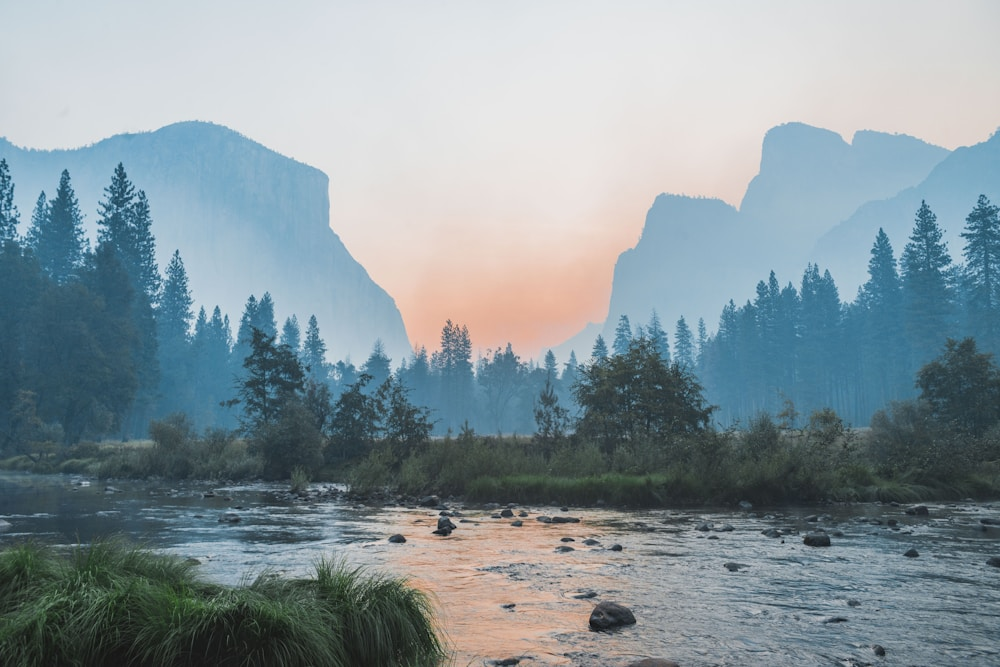

The history of the storm parka is the history of human survival in the most hostile environments on Earth. Long before synthetic fibers, microporous membranes, or laboratory testing standards existed, indigenous Arctic peoples developed clothing systems so sophisticated that modern textile engineers still study their thermal geometry. The word "parka" originates from the Nenets language of Siberia, meaning "animal skin," while "anorak" derives from the Greenlandic Inuit word "annoraaq."
From the ingenious seal-gut waterproof garments of Inuit hunters to the iconic military N-3B snorkel parkas of the Cold War and today's high-altitude 8,000-meter Himalayan down suits, the evolution of cold-weather outerwear represents a triumphant synthesis of indigenous wisdom and modern material science. At Storm Parka Vale, our master tailors draw direct inspiration from this rich polar lineage. In this historical chronicle, our outerwear historians trace the evolution of the storm parka across two centuries.
1. The Indigenous Genesis: Inuit Caribou and Seal-Gut Anoraks
Indigenous Arctic survival was made possible by brilliant natural tailoring:
- Hollow-Core Caribou Fur: Inuit hunters tailored two-layer parkas (atigi) from caribou skins. Caribou hair is hollow and traps air internally, providing extraordinary thermal loft with minimal weight.
- Waterproof Seal-Gut Membrane Anoraks: For sea kayaking in freezing ocean spray, hunters stitched translucent anoraks from dried seal intestines. When wet, seal-gut seams swelled naturally, creating a 100% waterproof seal.
- The Deep Snorkel Hood: The traditional forward-projecting hood was designed to create a pocket of calm, warm air around the face, protecting eyelashes and nose from freezing in gale-force winds.
“The Inuit invented the storm parka. Modern alpine engineering did not replace their wisdom; it translated their genius into modern membrane textiles.”
2. Early Antarctic Expeditions: Shackleton, Scott, and Amundsen (1900–1912)
The Golden Age of Antarctic exploration highlighted the difference between wool and fur:
- Scott’s Heavy Woolens vs. Amundsen’s Inuit Furs: Captain Robert Falcon Scott relied on heavy gabardine cotton and thick woven woolens that absorbed sweat and froze solid. Roald Amundsen adopted loose-fitting Inuit fur parkas, successfully reaching the South Pole first and returning safely.
- Ventile Cotton Innovation: Developed in England during World War II, Ventile tightly woven long-staple cotton swelled when wet, creating the first breathable semi-waterproof textile for fighter pilots.
3. The Cold War Aviation Era: The USAF N-3B Snorkel Parka (1950s)
Military aviation pushed parka design into synthetic textiles and heavy-duty zippers:
Commissioned for US Air Force flight crews stationed in sub-zero Alaskan and Greenlandic airbases, the iconic N-3B parka introduced heavy sage-green flight nylon, wool batting insulation, and a full zip-up snorkel hood lined with coyote fur, setting the aesthetic template for modern cold-weather outerwear.
4. Arctic Outerwear Evolution Timeline Matrix
| Era & Milestone | Primary Shell Material | Thermal Insulation Method | Weatherproof Rating |
|---|---|---|---|
| Indigenous Arctic (Ancient - 1900) | Seal-gut / Caribou hide | Hollow-core caribou fur & double layers | Natural Windproof & Marine Waterproof |
| Polar Exploration (1910s) | Tightly woven cotton gabardine (Burberry) | Layered woven Shetland woolens | Wind-resistant (Poor moisture management) |
| Military Aviation (1950s, N-3B) | Heavy-duty flight nylon twill | Wool pile & early polyester batting | Windproof (Heavy: 2.5 kg weight) |
| Modern 8,000M Era (Present) | 3-Layer ePTFE + Ripstop Cordura | 900 Fill Hydrophobic Down + Box-Walls | 35,000mm Waterproof & -50°C Certified |
5. The 1953 Everest Expedition and the Golden Age of Mountaineering Down
When Sir Edmund Hillary and Tenzing Norgay summited Mount Everest in 1953, they wore custom-tailored down-filled jackets crafted by British manufacturer Howard Flint. This milestone established goose down as the indispensable insulation standard for high-altitude Himalayan mountaineering.
6. The Membrane Revolution: Waterproof Breathability (1970s–90s)
The invention of expanded PTFE microporous membranes in the late 1970s eliminated the tradeoff between waterproof protection and sweat evaporation, allowing mountaineers to tackle severe alpine routes in stormproof garments that weighed less than a kilogram.
7. Storm Parka Vale: The Modern Polar Standard
Today, Storm Parka Vale synthesizes two centuries of outerwear history in Manhattan: combining the deep tunnel hood aerodynamics of traditional Inuit anoraks with 900 fill-power hydrophobic goose down and 35,000mm hydrostatic head membranes for the ultimate sub-zero armor.
8. Wear the Legacy of Polar Pioneers
Wearing a Storm Parka Vale creation connects you with a legendary lineage of explorers, scientists, and artisans who dared to face the fiercest blizzards on Earth and triumph in warmth and grace.
9. Archival Preservation of Historic Down Garments
Museum curators maintain early twentieth-century polar exploration garments in climate-controlled archival vaults. Studying these historic artifacts allows our modern master tailors to understand how traditional hood patterns prevented facial frostbite during multi-month ice expeditions.
10. The Transition to Ethical Down Certification
In the twenty-first century, high-altitude outerwear manufacturers embraced complete supply chain transparency. Storm Parka Vale utilizes exclusively Responsible Down Standard (RDS) certified down, ensuring that our polar garments honor both extreme performance and animal welfare.
11. An Eternal Heritage of Alpine Outerwear Mastery
At Storm Parka Vale, we celebrate the fearless pioneers who mapped the polar regions of our planet, handcrafting modern alpine parkas that unite historic exploration heritage with cutting-edge material physics.
12. Hand-Stitched Sinew Thread and Waterproof Seam Expansion
Traditional Inuit seamstresses utilized split caribou sinew threads to sew animal hide garments. When exposed to maritime freezing spray, the natural collagen fibers swelled inside needle holes, creating a natural hydrostatic seal that prevented ocean water penetration.
13. Snorkel Hood Wire Framing and Frost Crystal Shedding
Historic military snorkel hoods incorporated flexible copper wire hoops within outer coyote ruffs. The uneven hair lengths of natural wolverine and coyote fur shed breath moisture instantly, preventing frost crystals from freezing against the wearer's facial skin.
14. A Century of Alpine Devotion and Survival
Exploring the rich history of Arctic parkas connects modern mountaineers with generations of courageous polar explorers whose hard-won lessons continue to shape every stitch of technical outerwear crafted today.
15. The Eternal Crown of Polar Outerwear Heritage
At Storm Parka Vale, we honor the ancient wisdom of indigenous Arctic craft, building high-altitude storm parkas that unite timeless polar heritage with the highest standards of modern material science.
16. Archival Curation of Mid-Century Expedition Equipment
Alpine historians study 1950s Himalayan down jackets to analyze how early box-wall baffle geometries evolved into modern 3D articulated sleeping suits and 8,000-meter summit suits.
17. Stepping Fearlessly into the Sub-Zero Future
Every Storm Parka Vale creation represents a magnificent tribute to human resilience, providing dependable sanctuary across the coldest and most remote frontiers of the globe.
18. The Evolution of Internal Fleece Warmth Linings
Early twentieth-century expedition parkas used heavy shearling sheepskin linings that became rigid with frost. Modern alpine outerwear replaces heavy sheepskin with high-loft brushed micro-fleece gaskets that trap warm boundary air with featherweight softness.
19. An Enduring Tribute to Polar Exploration
At Storm Parka Vale, every expedition garment honors the fearless heritage of polar pioneers, crafting technical outer garments that conquer freezing blizzards with supreme comfort and graceful dignity.
Frequently Asked Questions on Parka History

Dr. Astrid Halvorsen
Director of Polar Textile History at Storm Parka Vale. Astrid holds a doctorate from the University of Oslo and curates historical Arctic apparel exhibitions globally.